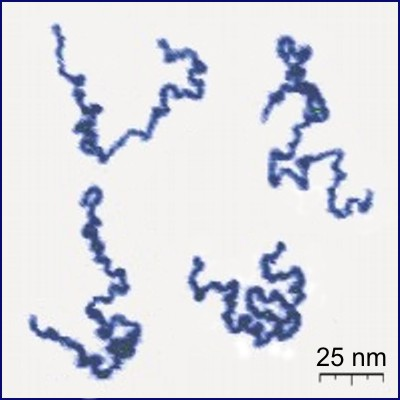
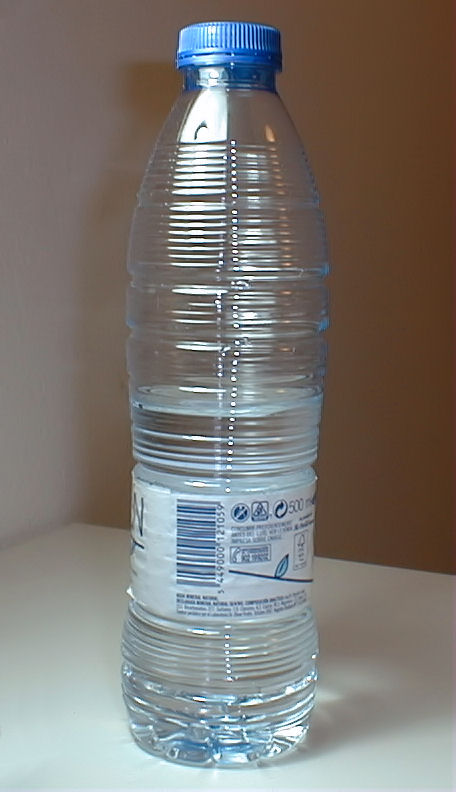
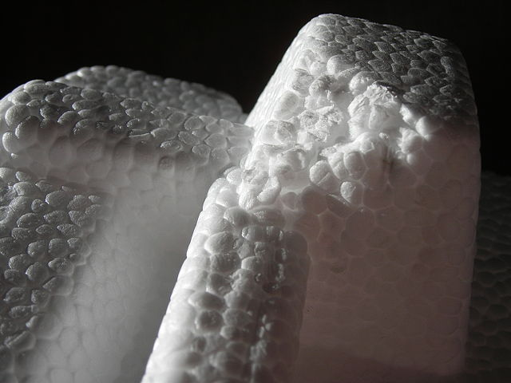
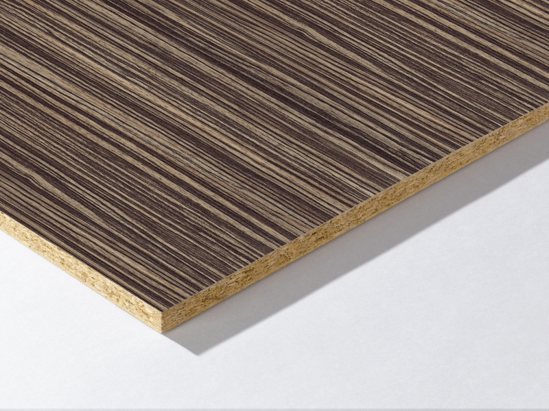

Materials plàstics¶
Són materials sintètics compostos per polímers, que es fabriquen a partir de gas natural o oli refinat. Caracteritzen la seva capacitat de modelar fàcilment sota l’acció de la calor i la pressió.
Índex de contingut:
Polímers¶
Els polímers són grans molècules compostes per moltes molècules petites, igual que les mateixes, anomenades monòmers.

Fotografia d’un polímer real mitjançant un microscopi de força atòmica.¶
Els monòmers són petites molècules que s'uneixen entre elles en cadenes llargues formades per la unió de fins a milers d'elements. Aquestes llargues cadenes poden ser lineals, tenir ramificacions o en forma de xarxa.
Els polímers són generalment compostos basats en àtoms de carboni, anomenats compostos orgànics, tot i que també es poden basar en àtoms de silici, anomenats silicones.
Propietats de plàstic¶
- Propietats mecàniques dels plàstics
En general, els plàstics són suaus i amb resistència mecànica mitjana. La tenacitat depèn del plàstic. Hi ha plàstics molt resistents a cops com el policarbonat i d’altres molt fràgils.
Alguns plàstics especials d’alt rendiment admeten temperatures altes millor que d’altres i tenen una bona resistència mecànica. Aquest és el cas del Kevlar que s’utilitza a les armilles a prova de bales.
- Densitat
Els plàstics són lleugers, amb una densitat similar a la de l’aigua (1 kg/litre).
Alguns plàstics es fabriquen amb bombolles de gas al seu interior per aconseguir que tinguin una densitat molt baixa i siguin bons aïllants tèrmics. Per exemple, l'escuma de poliuretà o el poliestirè (suro blanc) tenen aquesta estructura.
- Resposta lleuger
Alguns plàstics com el policarbonat o el metacrilat són molt transparents i s’utilitzen per fer finestres, DVD, fars, etc.
Els plàstics es van descartar en l’entorn degradant -se amb la llum del sol en microplàstic contaminant i produint substàncies tòxiques.
- Propietats de fabricació de plàstics
- Els plàstics són molt malebles, extremadament dúctils i es poden trobar. Tot això facilita molt la soldadura o la fabricació de fulls fins, fils o peces modelada.
- Conductivitat plàstica
- Els plàstics tenen poca conductivitat tèrmica i elèctrica, és per això que s’utilitzen com a aïllants elèctrics i tèrmics.
- Propietats químiques dels plàstics
- L’oxidació, els àcids i els càustics resisteixen molt bé. Per això, molts contenidors de substàncies químiques són de plàstic.
- Propietats ecològiques dels plàstics
La majoria dels plàstics no són biodegradables, són tòxics en la seva fabricació i en el medi ambient.
Actualment, els microplàstics representen un gran problema mediambiental perquè s’incorporen a la cadena tròfica com a menjar animal, que acabem menjant humans més endavant. Es calcula que actualment ingerim l’equivalent en pes a una targeta de crèdit cada any. Els microplàstics emeten substàncies similars a les hormones que afecten negativament la salut de tots els animals i persones.
Els plàstics poden reciclar un nombre reduït de vegades perquè quan els reciclen degraden la pèrdua de les seves propietats originals i no s’utilitzen per fabricar el mateix producte.
Es calcula que només el 14% del plàstic es recull per al reciclatge.
:index:`termoplàstic ''¶
Es poden fondre o fondre a temperatures no gaire altes i endurir -se quan es refreden.
- Polietilè tereftalat (PET)
Molt utilitzat en begudes i contenidors tèxtils.

Ampolla d'aigua mineral, feta de mascota.¶
Feralbt, CC BY-SA 3.0, vía Wikimedia Commons.- Polietilè (PE)
És un dels plàstics més habituals pel seu preu baix. S'utilitza en bosses, pel·lícules transparents, canonades, contenidors, etc.
Hi ha dos grans tipus de polietilè que difereixen per la seva densitat:
- Polietilè d’alta densitat ** Pead **
- Polietilè de baixa densitat ** PEBD **
- Clorur de polivinil (PVC)
PVC rígid: s'utilitza en contenidors, finestres, canonades.
PVC flexible: s’utilitza per fabricar cable, joguines, calçat, sòl, etc.
- Polipropilè (pp) <https://es.wikipedia.org/wiki/polipropileno> `` `
És el plàstic més utilitzat després del polietilè.
S'utilitza per fer contenidors d'aliments, llençols transparents, teixits, etc.
- Polystyrene (ps)
Aquest plàstic es fon amb temperatures relativament baixes (100 ºC).
S'utilitza per fer contenidors de iogurt, navalla, poliestirè ampliat ("suro blanc" o poliexpan) aïllant i protecció.

Poliestirè expandit o poliexpan, també anomenat "Cork blanc ".¶
Phyrexian, CC BY-SA 3.0, vía Wikimedia Commons.- Símbols de reciclatge
Els termoplàstics se solen identificar amb un símbol que indica la seva composició, per facilitar el seu reciclatge.

Símbols dels diferents plàstics reciclables.¶


Termoplàstic d'alt rendiment¶
Són termoplàstics amb millors beneficis mecànics i de resistència a la calor que el termoplàstic comú.
- Nailon
S'utilitza per fer fils molt resistents com els dels mitjans, els paracaigudes, l'interior dels pneumàtics, etc. També per fabricar mecanismes com engranatges i coixinets, cremalleres, etc.
- Teflon
El potetrafluoroetilè, més conegut com a tefló, és un polímer pràcticament inert, de manera que no reacciona amb altres substàncies. Té una fricció molt baixa, no és punxeguda i resisteix a les temperatures de fins a 270 ºC.
S'utilitza com a recobriment de paelles, cintes per evitar fuites d'aigua en aixetes, mecanismes que no necessiten lubricació, etc.
- Policarbonat
És molt transparent i molt resistent als impactes, de manera que s’utilitza com a substitut del vidre. Amb ell, CD, DVD, Windows, Cristalls a prova de bala, escuts antidisturbis, visera de casc motorista, panells de separació, etc.
- Metacrilat <https://es.wikipedia.org/wiki/polimetacrylate_de_metilo> `` `
És encara més transparent que el policarbonat. De 10 a 20 vegades més resistent a l’impacte que el vidre, resisteix a la radiació ambulatòria i de la radiació ultraviolada.
S'utilitza per fer fibra òptica, senyals, expositors, aquaris, obres d'art, etc.

Bromo pur envoltat d’una galleda de metacrilat.¶
Alchemist-hp, CC BY-SA 3.0 Germany, vía Wikimedia Commons.


termostables¶
No es fonen un cop fabricats. Si la temperatura augmenta molt degradada sense fondre, igual que la fusta.
- Baquelita
Va ser el primer plàstic sintètic, creat el 1907. Es pot fondre i modelar durant la seva fabricació, però un cop solidificat no es pot fondre de nou.
Fins i tot avui utilitzeu per fer pantalles i manipulars per a equips de cuina, terminals elèctrics, etc.
- Melamine
El seu ús més conegut és cobrir la fusta aglomerada al costat de paper de colors o imitació de fusta. Els mobles que utilitzen aquesta tècnica també s’anomenen mobles de melamina.

Tauler de fusta recoberta de melaminina.¶
Laidler139, CC BY-SA 3.0, vía Wikimedia Commons.- Epoxi Resin
S'utilitza per fabricar adhesius de dos components molt resistents amb els quals es fabriquen avions, cotxes, material esportiu, etc.
Un altre ús molt freqüent és la preparació de panells de fibra de vidre o fibra de carboni, que s’utilitzen per fabricar vaixells, transport de cotxes de carreres, contenidors de vidre, plaques de circuit impresos, etc.

Contenidor de fibra de vidre amb resina epoxi.¶
Diario de Madrid, CC BY-SA 3.0, vía Wikimedia Commons.- Poliuretà
El seu ús més conegut és la fabricació d’escumes adhesives que serveixen com a aïllant de la paret tèrmica o per enganxar marcs de portes i finestres amb farcits grans.

{kind=link}
{kind=link}
{kind=link}
{kind=link}
{kind=link}
{kind=link}
Elastomeres¶
Són polímers amb gran elasticitat, és a dir, poden estirar -se molt quan apliquen força i, quan cessa la força, recuperen la mida inicial.
- Latex
És d’origen natural, una resina que s’extreu de l’arbre Siringa (Hevea brasiliensis).
S'utilitza en guants, preservatius, matalassos, roba, boles, pneumàtics, geniva, etc.
- Neoprè
El seu ús més conegut és la fabricació de roba i botes d’aigua que són aïllants tèrmics (vestits de busseig).
També serveix per fer cinta adhesiva, cobertes de protecció, sacs de dormir, etc.
- Silicona
La majoria dels polímers són compostos orgànics, perquè es basen en cadenes de carboni llargues. Per contra, les silicones es basen en llargues cadenes de silici, formant polímers inorgànics.
Podeu destacar el seu ús com a adhesiu per a vidres i juntes de finestra, motlles de cuina per a gel o gel, pròtesis mèdiques, etc.
{kind=link}
{kind=link}
{kind=link}
Preguntes unitàries¶
Unitat en format imprimible, amb preguntes.
Qüestionaris¶
Test qüestionaris sobre materials plàstics.